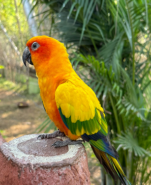
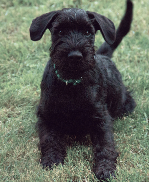

팝업
찾습니다
가족을 찾습니다
-
실종
포메라니안 / 암컷 / 2살 포메라니안 / 암컷 / 2살
- 실종장소 경기도 고양시 덕양구 원흥동 462
- 실종날짜 2025.04.28
- 특이사항 눈물 자국이 심함, 등쪽이 갈색입니다
-
종료
웰시코기 카디건 / 수컷 / 3살
- 실종장소 인천광역시 미추홀구 도화초등학교
- 실종날짜 2025.05.07
- 특이사항 사람을 좋아함, 체중 15kg, 귀가 큼
-
실종
러시안 블루 / 암컷 / 2살
- 실종장소 서울특별시 강남구 논현동 194-9
- 실종날짜 2025.05.14
- 특이사항 뚱뚱함, 가슴에 흰색털이 있음
-
실종
코리아 쇼트 헤어 / 암컷 / 3살
- 실종장소 서울특별시 동작구 새움고시원
- 실종날짜 2025.05.21
- 특이사항 리본 목걸이를 달고있음, 초록색이나 에메랄드 빛 색의 눈
주인을 찾습니다
-
구조
흰색 고양이
- 실종장소 대구광역시 달서구 대성 새마을금고
- 실종날짜 2025.05.03
- 특이사항 온순하고 등에 검은 자국
-
종료
무지개 앵무새
- 실종장소 경기도 남양주시 남양주시 별내면
- 실종날짜 2025.05.03
- 특이사항 말을 따라하고 인근 운동장에 화장실 근처에서 떠돌고 있었어요
-
구조
비숑
- 실종장소 대구광역시 동구 반야월북로53길
- 실종날짜 2025.05.17
- 특이사항 사람을 잘 따르고 목줄의 이름이 복순이에요
-
목격
검정 슈나우저
- 실종장소 서울특별시 동작구 새움고시원
- 실종날짜 2025.05.18
- 특이사항 고시원쪽 편의점 뒤쪽에서 떠돌아다니는 것을 목격했습니다